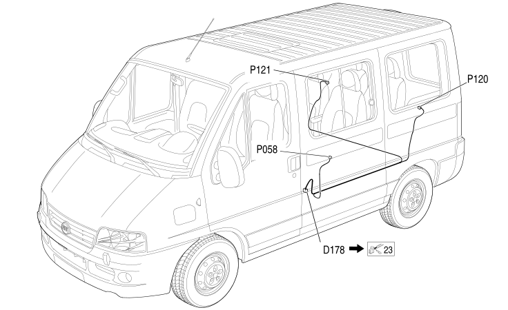

106 REAR SPEAKER AND CURRENT SOCKET BRIDGE
- Path
- Electrical equipment > 2 WIRING > 106 REAR SPEAKER AND CURRENT SOCKET BRIDGE
- Kind
- wiring harness
- Applies to
- all engines; all production periods; only with equipment: Minibus and Van and Panorama and Combi
- Interactive page
- https://sloeber94.github.io/elrnDB-fDct/en/#/244002296
Applies to: all engines; all production periods; only with equipment: Minibus and Van and Panorama and Combi

Topics that link to this page (8)
- D178 LEFT REAR/REAR SPEAKER AND REAR CURRENT SOCKET BRIDGE COUPLING (REAR SPEAKER AND CURRENT SOCKET BRIDGE)
- D178 LEFT REAR/REAR SPEAKER AND REAR CURRENT SOCKET BRIDGE COUPLING (REAR SPEAKER AND CURRENT SOCKET BRIDGE)
- P058 SIDE CURRENT SOCKET (REAR SPEAKER AND CURRENT SOCKET BRIDGE)
- P058 SIDE CURRENT SOCKET (REAR SPEAKER AND CURRENT SOCKET BRIDGE)
- P120 LEAF REAR SPEAKER IN SIDE PANEL (REAR SPEAKER AND CURRENT SOCKET BRIDGE)
- P120 LEAF REAR SPEAKER IN SIDE PANEL (REAR SPEAKER AND CURRENT SOCKET BRIDGE)
- P121 RIGHT REAR SPEAKER IN SIDE PANEL (REAR SPEAKER AND CURRENT SOCKET BRIDGE)
- P121 RIGHT REAR SPEAKER IN SIDE PANEL (REAR SPEAKER AND CURRENT SOCKET BRIDGE)